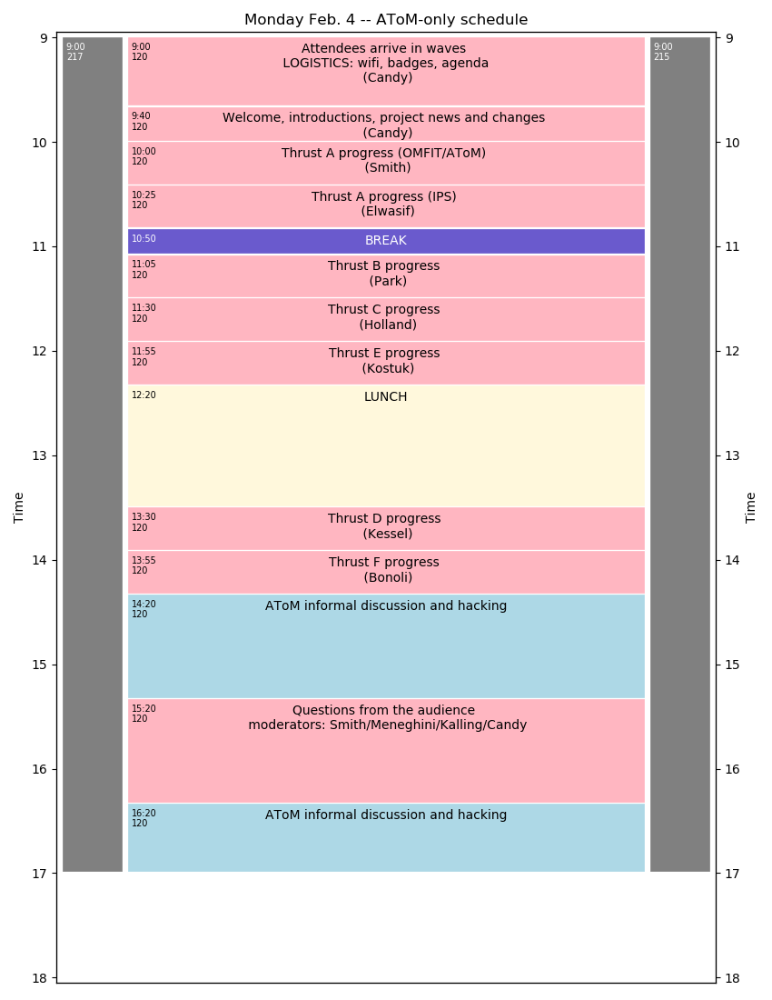
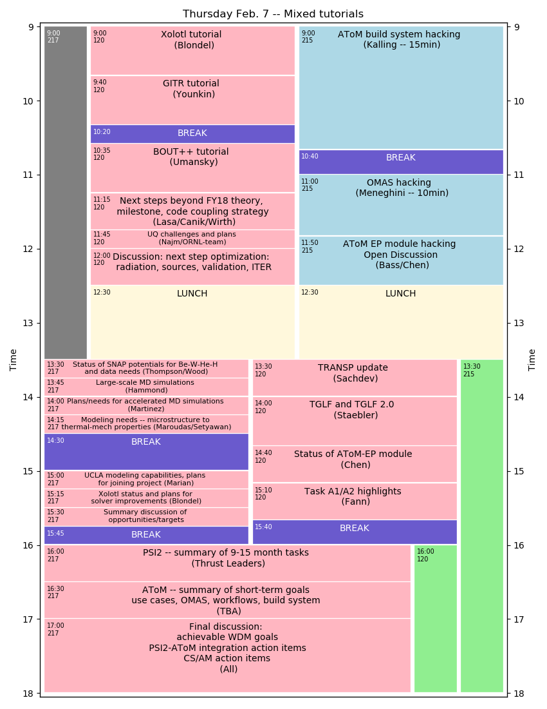
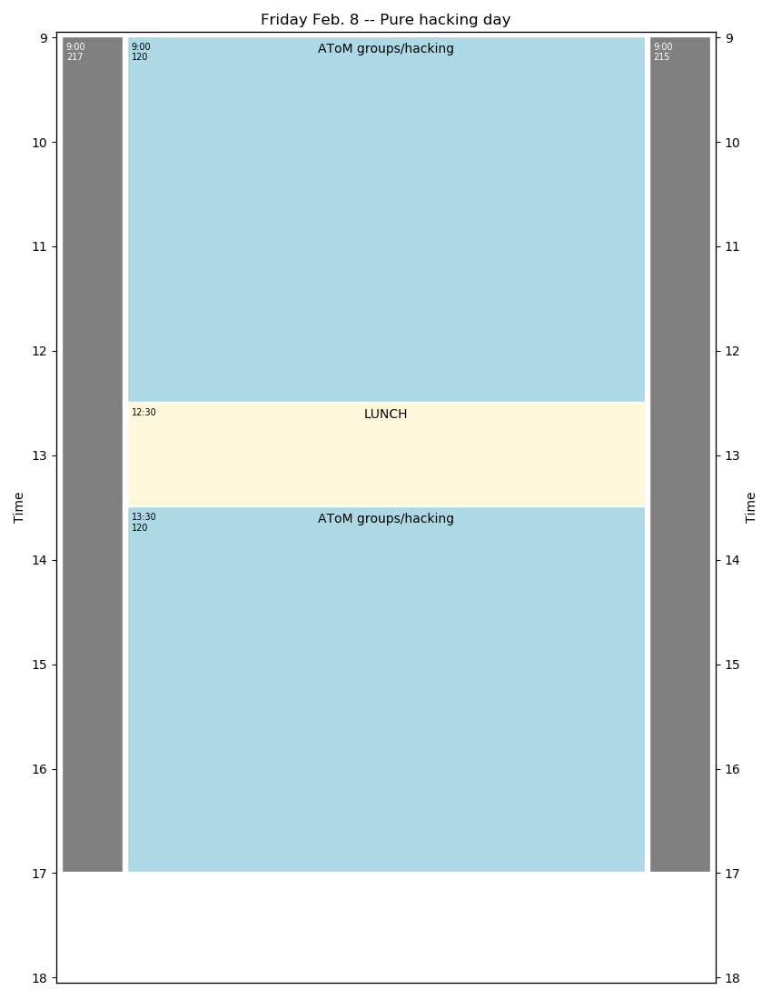

AToM Past Meetings¶
2019.02.04 – PSI2/AToM All-hands Meeting and Code Camp¶
| Time: | Monday 4 Feb. – Friday 8 Feb. |
|---|---|
| Location: | General Atomics Bldg 7 |
| Badges: | gonzalesl@fusion.gat.com |
| Info: | GA Visitor Information |
LOGISTICS
- This information is subject to updates before meeting
- Obtain badge at GA main building security on first arrival
- Bring passport (non US person), green card (resident) or DL (citizen)
- People will be escorted daily (out of main building to meeting spaces) at 8:45am, 9:00am, 9:15am
- Badge processing will take 15-20min so please arrive early
- Presentations in PDF format (please), 16x9 aspect ratio
- Selected presentations will be broadcast via Bluejeans. Connection information will be sent by email
- Please review agenda for issues or problems. Report issues to Jeff Candy by email
- AGENDA LEGEND: pink=lecture, blue=hacking, green=open room, grey=unavailable room
Day 1 – Monday Feb 4

Day 2 – Tuesday Feb 5

Day 3 – Wednesday Feb 6

Day 4 – Thursday Feb 7

Day 5 – Friday Feb 8

2018.10.18 – October Conference Call¶
| Time: | Friday, 18 October 2018 – 10:00am-12:30pm PT |
|---|
Agenda
- rapid overview of status/activities (36 min total)
- discuss small AToM meeting at APS (for those attending APS-DPP in Nov.) (8 min)
- discuss February all-hands meeting (with PSI2) (8 min)
- action items (goals) to be completed before Feb meeting (10 min)
2018.03.30 – March Conference Call¶
| Time: | Friday, 30 March 2018 – 12:30pm-2:30pm PDT |
|---|---|
| Join: | Email connection info sent (26 March) |
Agenda
- Summary of activity on Thrusts
- A: Meneghini, Kalling, Elwasif
- B: Green, Law
- C: Holland
- D: Kessel, Dorf, Chen
- E: Bernholdt
- F: Bonoli
2018.01.18 – January Conference Call¶
| Time: | Thursday, 18 Jan 2018 – 1:00pm-2:30pm PDT |
|---|---|
| Join: | Email connection info sent (16 Jan) |
Agenda
- Progress on AToM build system
- Tier-0 installation
- GACODE build system
- Spack
- Liaisons
- Use/benchmark cases
- Interacting with SciDAC centers
- Access to ITER scenario database
- Volunteers for webpage work
- Managing publications
- Maintaining project overview/summary pages
- Developing useful software map (including liaison-related info)
2017.11.27 – ESL/AToM All-hands Meeting and Code Camp¶
| Time: | Monday 27 Nov – Thursday Nov 30 |
|---|---|
| Location: | General Atomics Bldg 7, Room G07-120 |
| Badges: | gonzalesl@fusion.gat.com |
| Info: | GA Visitor Information |
| Agenda: |
| Day | Time | Speaker | Title |
|---|---|---|---|
| Monday | ESL day | ||
| 09:30AM | Snyder/Candy | Welcome and logistics | |
| 09:45AM | Snyder | ESL project overview and timeline | |
| 10:00PM | Dorf | COGENT progress and plans | |
| 10:45PM | BREAK | [possible call with J. Mandrekas] | |
| 10:55AM | Candy | CGYRO/NEO progress and plans | |
| 11:40AM | Krasheninnikov | UCSD progress and plans | |
| 12:00PM | DISCUSSION | Physics coordination | |
| 12:15AM | LUNCH | ||
| 01:30PM | Dorr | ESL math overview | |
| 02:30PM | Ghosh | Semi-implicit COGENT time-integration | |
| 03:00PM | Ricketson | Sparse grid methods | |
| 03:30PM | BREAK | ||
| 03:45AM | DISCUSSION | Math and math/physics coordination | |
| 04:00PM | Candy | AToM introduction, relation to ESL | |
| 04:10PM | Snyder/Meneg. | EPED and ESL-AToM coordination | |
| 04:30PM | Dorf/Dorr | COGENT and ESL-AToM coordination | |
| 05:00PM | DISCUSSION | Joint AToM/ESL issues | |
| 07:00PM | DINNER | Location TBA | |
| Tuesday | AToM Presentations | ||
| 09:00AM | Candy | Welcome and AToM overview | |
| 09:40AM | Batchelor | IPS for physics studies | |
| 10:00AM | Holland | Validation thrusts | |
| 10:20AM | Green | WDM thrust action items | |
| 10:40AM | Bonoli | AToM liaisons, SciDAC center interact. | |
| 11:00AM | DISCUSSION | Strategy for WDM, liaisons, integration | |
| 11:40AM | LUNCH | ||
| 01:00PM | Fann | Parallel-in-time methods | |
| 01:20PM | Law | Reduced Models | |
| 01:40PM | Elwasif/Dorr | RAPIDS and FASTMath (ASCR SciDAC) | |
| 02:00PM | BREAK | ||
| 02:20PM | Kessel | Modeling activities at PPPL | |
| 02:40PM | Chen | EP inteaction with MHD/turbulence | |
| 03:00PM | Dorf | Modeling activities at LLNL | |
| 03:20PM | Park | CESOL | |
| 03:40PM | BREAK | ||
| 04:00PM | DISCUSSION | Create action items | |
| 07:00PM | DINNER | Location TBA | |
| Wednesday | AToM Technical day | ||
| 09:00AM | Smith | Logistics, Github navigation, etc | |
| 09:25AM | Elwasif | IPS modules and development | |
| 09:50AM | Kalling | My experience installing AToM | |
| 10:15PM | BREAK | ||
| 10:30AM | DISCUSSION | Strategy for WDM, liaisons, integration | |
| 11:40AM | LUNCH | ||
| 01:00PM | Candy | AToM makefile, Sphinx/rst, website tasks | |
| 01:30PM | Meneghini | AToM+ITER-IMAS = OMAS | |
| 02:00PM | Snoep | 1.5D STRAHL-TGYRO coupling | |
| 07:00PM | DINNER | Location TBA | |
| Thursday | AToM hackathon | ||
| 09:00AM | CODING | Questions and open discussion/coding | |
| 11:40AM | LUNCH | ||
| 01:30AM | CODING | Questions and open discussion/coding | |
| 07:00PM | DINNER | Location TBA | |
2017.09.27 – Kickoff Conference call¶
| Time: | Wednesday, 27 Sept 2017 – 1:00pm-2:30pm PDT |
|---|---|
| Join: | https://fusion.gat.com/global/Remote13-301 |
| Agenda: |
- Summary of AToM-0, vision for AToM (Candy, 10 min)
- Self-introduction from each team member (all, 20 min)
- Summary presentations by AToM-0 Institutional PIs
- Bernholdt (6 min)
- Dorf (6 min)
- Dorr (6 min)
- Green (6 min)
- Holland (6 min)
- Open discussion of action items for November F2F meeting at GA (30 min)